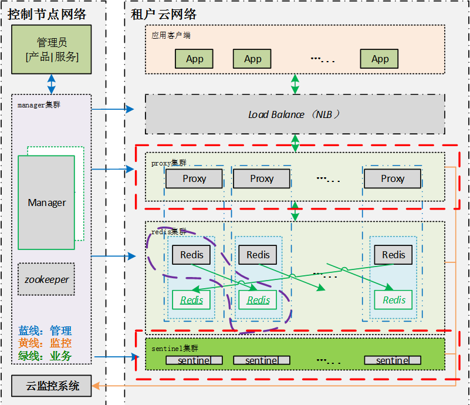

思路
鉴于之间学习过的Docker一些基础知识，这次准备部署一个简单的分布式，高可用的redis集群，如下的拓扑
下面介绍下，对于这张拓扑图而言，需要了解的一些基础概念。
Redis持久化
Redis有两种持久化策略。
Rdb
- 全量备份
- 形成二进制文件: dump.rdb
在使用命令 save（停写）, BgSave。或者Save配置条件触发时，开始全量持久化Rdb文件。
相关的Redis.conf配置有：
- dir
- dbfilename
- save（停写）
例如：
|
|
aof
- Append only file
- 增量备份
Redis.conf配置
那么aof和Rdb的一些对比呢：
| Col1 | rdb | aof |
|---|---|---|
| 性能影响 | 平时不影响性能 备份时性能影响较大 |
性能一直会受到影响 |
| 数据丢失 | 两次备份之间的增量数据会丢失 | 不会丢失数据 |
| 备份文件大小 | 只有数据，较小 | 除了数据还记录了数据的变化过程，较大 |
可参考 官方文档
Redis高可用
从两个角度来考虑高可用：主从复制，主从切换
主从复制
可以通过命令SLAVEOF，来配置当前节点是某个Redis的Slave节点。参考 slaveof
主从切换
使用官方的Redis-sentinel可以实现Redis的主从切换。
参考Redis官方文档 和 sentinel.md
值得注意的是，配饰抖个Sentinel实例，他们之间是互相通信的。官方推荐：一个健康的集群部署，至少需要3个Sentinel实例。这样他们之间会通过quorum参数来执行主从切换操作ODOWN。
- SDOWN：主观离线，Sentinel发现redis挂了。
- ODOWN：客观离线，Sentinel根据规则投票后确定redis挂了
- 规则为 #of SDOWN>quorum
启动Sentinel
|
|
在本文的例子中，Sentienl的配置文件如下所示：
sentinel 实例1：
|
|
sentinel 实例2：
|
|
sentinel 实例3：
|
|
可以看出，3个实例监控了 firstmaster及secondmaster，两个集群。
对于其中一个sentinel实例，看到它的信息如下：
|
|
最后2行可以看出监控的集群，其余2个sentinel实例也是如此。
下面讲，如何在这样的集群上，通过Jedis来进行集群操作
JedisSentinelPool
它解决了痛点：
- 不确定主redis 的ip port
- 需要从sentinel获取
JedisSentinelPool可以直接想sentinel查询当前master的ip port，在建立连接。
|
|
从代码里可以看出，我们的Jedis链接是通过Sentinel来获取的。
分布式
解决痛点：
- 用户较多数据量大，一台服务器内存不足。
- 部署多台增加容量，但是需要考虑如何分割数据
Redis的分布式使用的是一致性哈希算法。满足：
- 分散性：避免相同的内容映射到不同节点
- 平衡性：均匀分布，每个节点上的内容数量差不多
- 单调性：增删节点时，不影响旧的映射。
一致性哈希的原理如图所示：
有了算法，那么数据分片在Redis中还有3种分类：
1，客户端分片
使用比如ShardedJedis，Predis，Redis-rb等客户端的包，在客户端金鑫该数据分片。
在本例中，使用ShardedJedisPool，代码如下：
|
|
可以看出，两个Master都在一个shardedJedisPool里。但是这里有个问题就是需要维护Master的地址，所以后续如果可能，也需要开发Sentinel管理的JedisPool的插件。
2，代理分片
Twemproxy, codis, onecache。如图：
特点：
- 服务端计算分片，客户端简单
- 客户端无需维护redis的ip
- Proxy会增加响应时间
3，查询路由
Redis 3.0:Redis集群自己做好分片。
特点：
- 无需proxy
- 客户端可以记录下每个key对应的redis以增加性能
- 支持3.0 的客户端还很少
docker 镜像：
https://hub.docker.com/r/tutum/redis/
https://github.com/tutumcloud/redis
Redis监控统计
Info ｛options｝
- Server/Clients/Memory/Persistence/Stats/Replications/Cpu/Commandstats/Keyspaces
常用的
- Memory : used_memory_human 当前使用内存量
- Memory : mem_fragmentation_ratio 内存碎片率
- Stats : instantaneous_ops_per_sec 实时的QPS
- Stats: expired_keys, evicted_keys, keyspace_hits, keyspace_misses 过期的key，被置换的key，命中的key数量，未命中的key数量
- Replication 主从连接是否正常，复制是否正常
- Commandstats 每个命令的执行情况
- Keyspaces 每个db上有多少key
彩蛋
一款成功产品的架构图：
单点式： 一主多从
分布式：
- Redis：多个Redis节点，每个节点都一主一从。
- Redis-sentinel: 主从探获、切换。
- Proxy：业务代理转发，数据分片
- NLB：负载均衡，Proxy去单点

部署Redis的Docker file
|
|
启动容器：
集群1：
|
|
集群2：
|
|